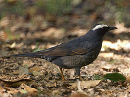
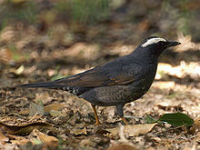

| Siberian Thrush | |
|---|---|
|  | |
| Conservation status | |
| Binomial name | |
| Zoothera sibirica (Pallas, 1776) |
| Siberian Thrush | |
|---|---|
|  | |
| Conservation status | |
| Binomial name | |
| Zoothera sibirica (Pallas, 1776) |
The Siberian Thrush, Zoothera sibirica, is a member of the Thrush family Turdidae.
It breeds in taiga in Siberia. It is strongly migratory, with most birds moving to southeastern Asia during the winter. It is a very rare vagrant to western Europe. It is very secretive.
The Siberian Thrush is similar in size to the Song Thrush. It is omnivorous, eating a wide range of insects, earthworms and berries.
The male Siberian Thrush is a dark blue-grey above and below, with a white stripe above the eye. The lower belly and flanks are white. The female is a much browner bird, with a buff stripe above the eye.
A striking identification feature of both sexes in flight is the black band on the white underwings, a feature shared with the White's Thrush.

{kind=link}